私がフィールドに持っていくものだけを置く。
余計な主張をしないギアを、世界から連れてくる。

ここでしか買えない理由が、3つある。
「すぐ届く」はAmazonに任せる。
「届いたとき、もうそれが特別になっている」体験が、ここの領域。
製造地の標高・気温・地形データを元に生成した環境音源をメールで送付。届く前から、その土地にいる体験が始まる。
AI GENERATED SOUND × 99LETTERS追跡番号だけのメールではない。そのギアの物語を、一文だけ。
例：「これはアルプスの稜線で設計された。」
過剰な説明のないパッケージ。開封の瞬間に世界観が完結する。余白が多いほど、想像が育つ。
PACKAGING DESIGN一言だけのフォローメール。感想の導線がSNSコンテンツへ繋がる。体験は購入で終わらない。
FOLLOW-UP